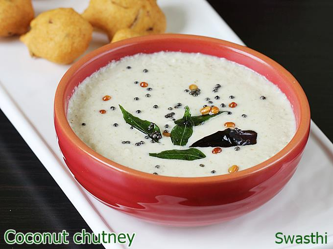

Coconut Chutney

Description
This is one of the most famous recipes of south India.
We love coconut chutney and we almost eat with many main dishes
like idli, dosa, vada.I personally love this recipe as it is very
easy and quick to make in the morning rush time.
Ingredients
- Fresh scraped Coconut/Frozen Coconut - 1 cup
- Bengal Gram - 2 tablespoons
- Ginger - 1/4 inch piece
- Green Chilies - 5
- Coconut oil - 1 tablespoon
- Mustard seeds - 1/4 teaspoon
- Urad Dal - 1/4 teaspoon
- Jeera - 1/4 teaspoon
- Curry leaves - a few
- Salt - as required
Steps
- Add coconut, bengal gram, ginger, green chilies, water and salt in the mixer
- Grind to a smooth paste
- Now heat oil in a pan and add mustard seeds, urad dal,jeera
- as they splatter, add curry leaves and switch off the stove
- Add the above to the ground chutney and mix well
- Add water to your wanted consistency, some like it thick, some like it watery.